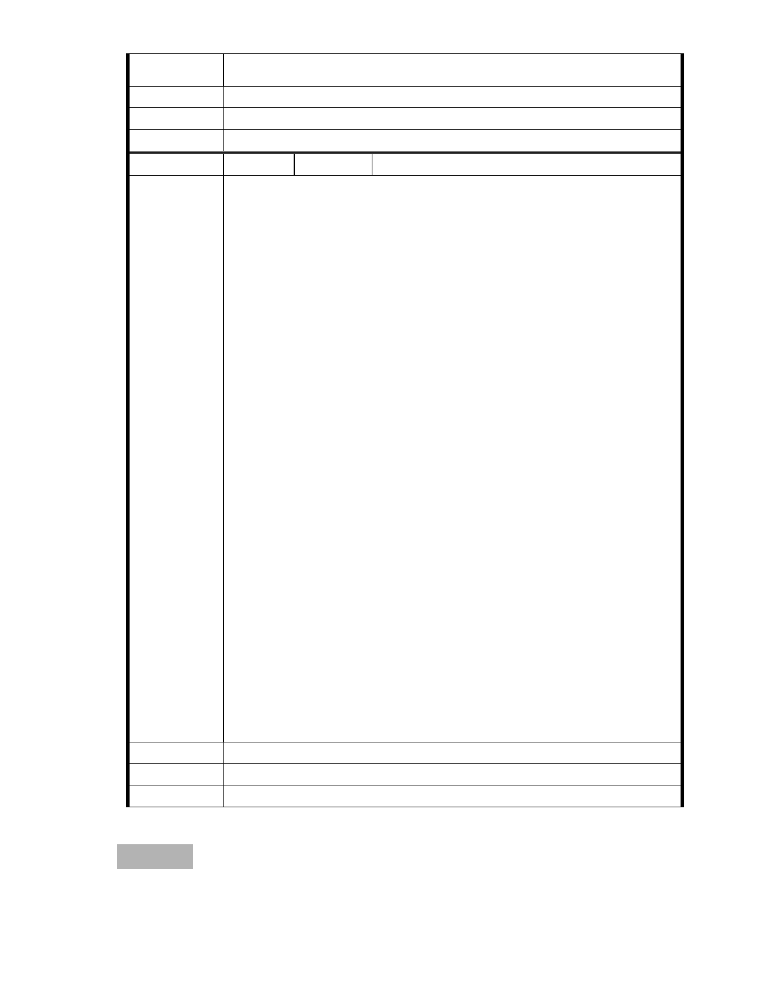

建議辦法
市府說明
委 員 會 決 議 同編號 1。
編 號 283 陳情人 高嘉瑜議員
慈濟引用《 都市計畫法》 中的第 27 條第 1 項第 3 款「為適應國防或經
濟發展之需要」法規要求解編保護區，但不論是國防、經濟發展或是急
迫性，都不適用此法條。依據都市計畫法的規定，都市計畫經發佈實施
後，除擬訂機關應於每 3 年內或 5 年內定期通盤檢討一次之外，不得隨
時任意變更（第 26 條）。都市計畫法 27 條到底適用何種狀況，應該要
由中央來釐清，本席擔憂此例一開恐成保護區違法開發的惡例，而更多
建商、宗教團體將要求比照辦理。
民間團體主張慈濟所規劃之防洪池，不足以容納此地之治洪量 3 萬立方
公尺，又此地乃溝谷地形，乃谷地集水區，上方有兩條溪流豪雨成災時
洪水將同往漏斗口的大湖傾瀉。因此若此處蓋園區大樓，水流可能受阻，
反向兩旁及上游氾濫。本席擔憂解編保護區開發，日後仍恐造成該地區
淹水狀況。
陳情理由
本席主張應先依法辦理環評，後再辦理保護區變更之審議，以杜絕爭議。
此案不但位於山坡地，且面積超過五公頃，理應辦理環評，但都委會之
「先通過主要計畫，再對細部計畫進行環評」提案，明顯規避環評過程，
為了追求「效率」而便宜行事。
內湖長期飽受水災、土石流、地層下陷之苦，也是居民擔憂恐懼的。「看
見台灣」這部電影給我們的省思警惕依然還在，那就是沒有人可以有權
利繼續我行我素，在我們的山林裡開腸剖肚，在我們的土地上殺雞取卵，
因為有一天，我們對自然環境的破壞，這塊土地都將百倍奉還。本席由
衷希望慈濟本於善的出發點，能夠立下典範，疼惜內湖保護區，傾聽居
民的心聲，讓保護區恢復原貌，讓慈濟贏得掌聲。
建議辦法
市府說明
委 員 會 決 議 同編號 1。
參、散會（19：40）
- 323 -